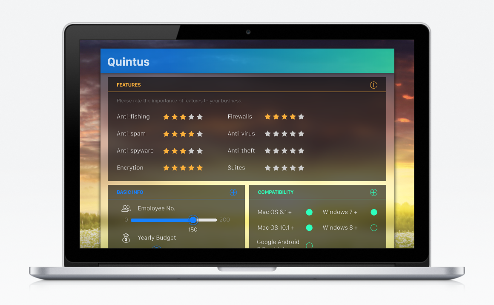
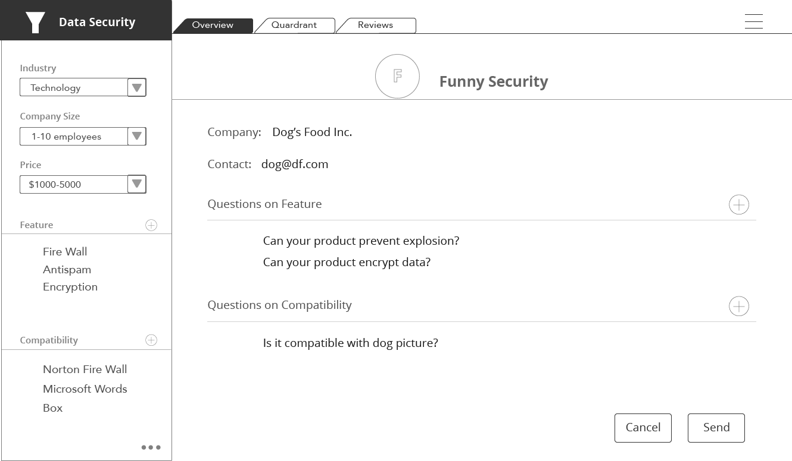

Quintus is an enterprise software recommendation engine for small businesses, who do not have resources to consult analysts' opinions. We are a one-stop solution for small businesses to search for enterprise products that meet their needs and connect with vendors directly from our platform.
This is a product developed during IEOR 190 Technology Entrepreneurship class at UC Berkeley.
First, take a look at our product demo. (friendly reminder there's audio)

We started by realizing the problem of lack of transparency in the analyst industry dominated by firms like Gartner.
We then realized that it's too difficult to directly compete with the established analyst industry, because for fortune 500 companies it's important to have analysts' opinions to back up their decisions for organizational(CIOs getting fired) reasons.
Therefore, we decided that we would position our product to target small businesses, which is a big but untapped market for analyst companies.

One of the biggest design challenges is that we wanted to match the specific needs of users with corresponding products. We needed a way for users to input their needs, and for enterprise products it's often complicated. I utilized star-rating pattern. While this may not be the easiest solution for users, this is a commonly used and seen pattern that most people are familiar with.
Another round of iterations to make the design more visually appealing. Note that the mockups are optimized for pithching purpose. As always, a constant struggle on the visuals...
While I really liked the scenic view background, the team and our advisor wanted a more professional looking background.